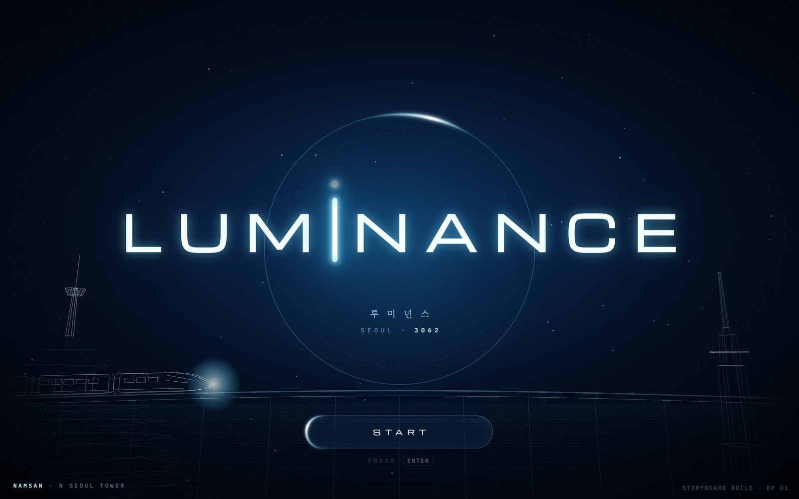
I’m building this because I have such a love for K-dramas, sci-fi and video games. It’s always been a passion project of mine.
Luminance is a sixteen-episode sci-fi drama I’m writing, and the game I’m building from it. It’s set in Seoul, 3062. Every human carries a luminance chip, and every bot wears a small glowing dot on its neck: cool white when it’s stable, crimson when it starts to crack.
Aevum, the century-old company that makes the bots, keeps one of them in a room that only looks like a home. Ji-yoo is Subject 001, the first bot built with a mind of his own, and in twenty-two years nobody has asked him what he wants. Across the river, Han Hae is a detective in the unit that handles bots gone rogue. She has worn her late father’s analog watch every day since she was eight, and she doesn’t trust bots.
A government program pairs them up. He has the work and not the world. She has the world and doesn’t want the work. Each has exactly what the other is missing.
Two relics hold the story together: his worn copy of Pinocchio, with three handwritten words on the back page, and her father’s watch. Both are twenty years old. The book has aged. He hasn’t.
It’s still in progress. The opening of episode 1 is playable below, and so is the storyboard I plan it in.
I wanted the future to feel old. Brushed metal, visible wear, holograms that look projected instead of rendered. Old Seoul still has fog, wood-paneled elevators and cardigans. Aevum is clean, polite and a little too perfect.
Aevum only speaks in output, performance and variance. It has no word for love, grief or choice, and that missing vocabulary is the heart of the story. Out in the city, someone keeps spraying one word over Aevum’s billboards: 기억. Remember.
Turn the sound on, then press Start. Walk with the arrow keys, press E to interact and Q to open the journal. Hold E to skip the film.
It opens on a line from Pinocchio, then a short film that stops on the handwriting in his book so you can trace it yourself. After that, the room is yours. Open the door, and the Scientist walks him down the corridor, a step ahead.
You finish the opening.
The film freezes on “My son. – Appa.” The words fade to a ghost and come back in his father’s ink under your finger, with soft taps on the page. The first thing you do in the game is the most emotional moment in it.
A room that only looks like a home.
Light shafts from a sky that’s really a screen, about 90 dust motes that sparkle inside the light, one panel of the sky that glitches, and soft dreamy edges. Drop the needle and tiny white notes drift up.
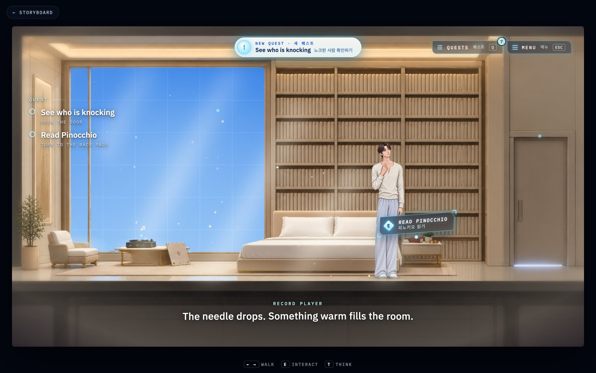
Tags that feel like Aevum.
Every action is a tilted hologram callout with a glowing E, the action in English with Korean underneath, and a wipe and flicker as it projects in.
Hold E to skip, with a ring that fills while you hold and drains if you let go, so nobody skips by accident. Skipping still lands you on the tracing, because that moment matters.
The knocking at the door comes at uneven gaps, about 6 to 10 seconds apart, so it feels like a person and not a loop. Each knock sends a soft ring of light off the door. It stops while the journal is open and picks up a beat after you close it.
Ji-yoo’s scale and footing went through several passes until he stood on the floor in front of the bed instead of floating over it, with a soft shadow and a faint reflection in the polished floor.
Luminance is two stories running at once, Ji-yoo inside Aevum and Hae out in the city, and they only work if they meet at the right moments. In a script doc they’re just pages. I needed to see a whole episode at once: every room in story order, split by whose eyes you’re in, so I can tell when one lane goes quiet too long or two scenes land on the same beat.
So the storyboard came first. It’s where I write, plan and check the game in one place: the script beside the board, every character’s file, and the city they live in.
It set the look for everything after it. I went with “daylight hologram”: bright, white and blue, glassy, with cyan glow. Aevum is clean, polite and a little too perfect, so the UI is too.
Go ahead and poke around. Scene 1 of the script is open. The rest stays blurred while I write.
Everything hangs on the room.
A game is built room by room, so the room is the unit everything hangs on: the art, who’s there, what’s said, what you can do and which clue it hides. Opening one shows me all of it at once, so I write a scene knowing exactly where the player is standing. The pixel reveal and decoding text are the same language the game uses when something comes into focus.
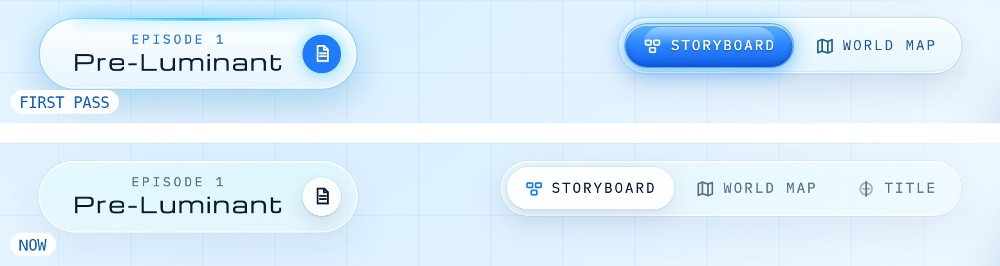
From 2009 to 3062.
The first toggles were glossy blue glass, which read “giving 2009 vs like 3062.” They became quiet frosted tracks with a clear lens that springs between options. No gloss, no glow.
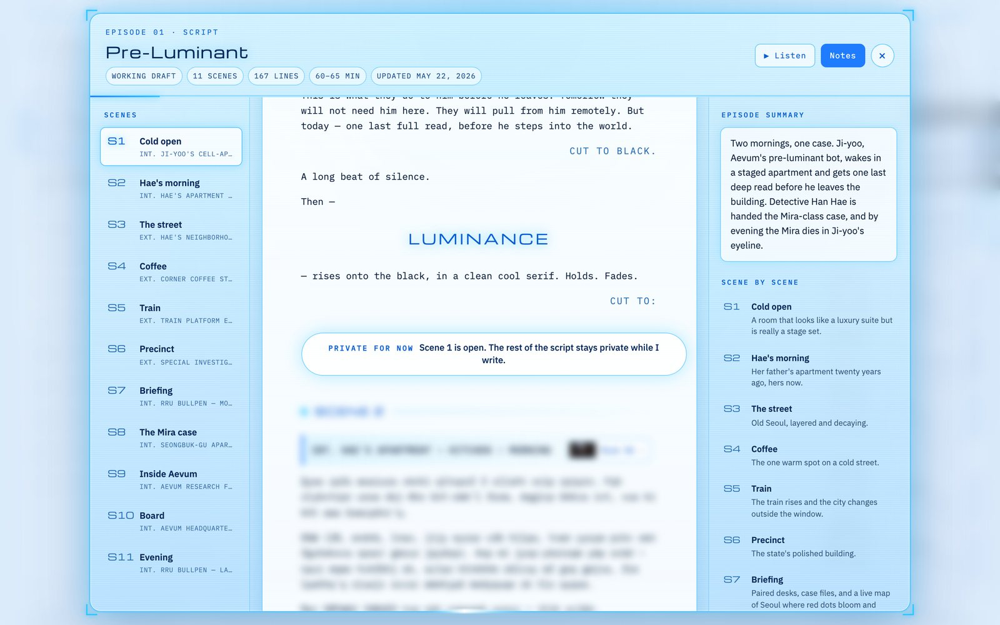
The script, next to the story.
Writing a game is writing for a place. With the script beside the board I read a scene and see the room it happens in, and a summary of every scene keeps the whole episode in my head. Listen reads it aloud, a voice per character, which is how I catch lines that read fine but sound wrong.
A world I can walk through.
Seoul 3062 is a character too. Flying over it, opening a district and riding the maglev tells me how far apart places really are, what Hae passes on her way to work, and where a scene should happen. For players it becomes the map in Ji-yoo’s journal: a city he’s never been allowed to see, filling in as the story opens it up.
The story runs on planting things in plain sight and paying them off late. So does the game. Every rule comes from something in the script:
He has never chosen anything. So every optional thing you do, like looking out the window or putting on a record, is logged in his journal as a choice he made himself.
Aevum talks in metrics. His door plate reads SUBJECT 001 · PRE-LUMINANT · ANOMALOUS BASELINE. His own thought sits underneath it.
Someone is writing “Remember.” 기억 tags are hidden in every room. Each one you find is logged in the Case file, with a snapshot of where it was.
Sixty-three steps. He counted the walk from his door to the lab when he was eight. It’s the name of episode 2, and he’s still counting in the corridor.
He has never left. The map of Seoul is dark and glitching except for Aevum. It fills in only as he reaches each place.
For me, as the writer. I write the story, design the world and build the game, often in the same afternoon. With the script, the board, the characters and the city in one place, I never lose the thread between them. When I change a scene, I can see everything it touches.
For the game. Almost every feature in the playable scene was built and tested in the storyboard first: the pixel reveal, the hologram labels, the walk cycles, the map. The game and its plan share one visual language and one set of parts, so each new room starts further ahead.
For players. The things that help me keep track of the story become the things that help players keep track of it: character files, memories, a map of the city. A story told in two lanes needs those anchors, or people get lost.
When it was time to design the menu, I started from the story instead of a template. Ji-yoo has spent his whole life being watched and never keeping anything of his own, so the journal became the first thing that’s his: the people he meets, the things he chooses to keep, the city he’s never seen.
The first version was a pause screen with a sidebar. It felt like a settings page, so it became a full takeover with tabs across the top, each with its own drawn icon and a little badge for what’s new. Quests got their own pill at the top of the room, shaped differently from the action tags, with main story and side quests split.
Everyone you haven’t met is a soft black and white photo with the storyboard’s pixel shimmer looping over it. My first try was an inverted, pixelated photo, and it looked broken instead of mysterious, so it went. Memories are objects you can touch: open Pinocchio to the back page and the handwriting glows gold, or drop the needle on his record.
Quests, characters, memory, Seoul.
Press Q in the game. Characters come into focus as you meet them, and the profile tilts toward your cursor like a hologram panel.
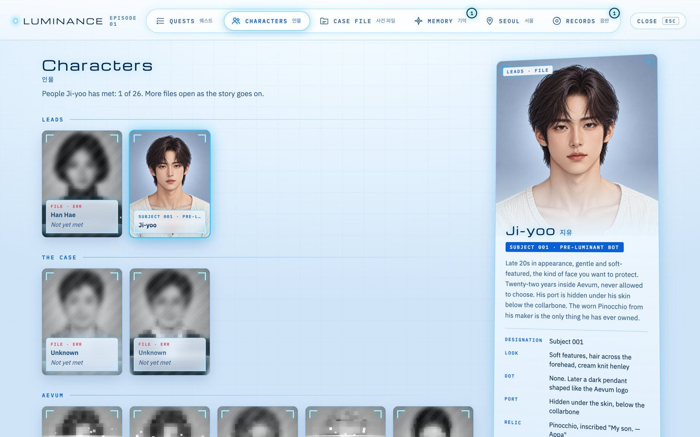
People you have to meet.
The whole cast is here from the start, locked. Only Ji-yoo is clear, because he’s the only person he knows.
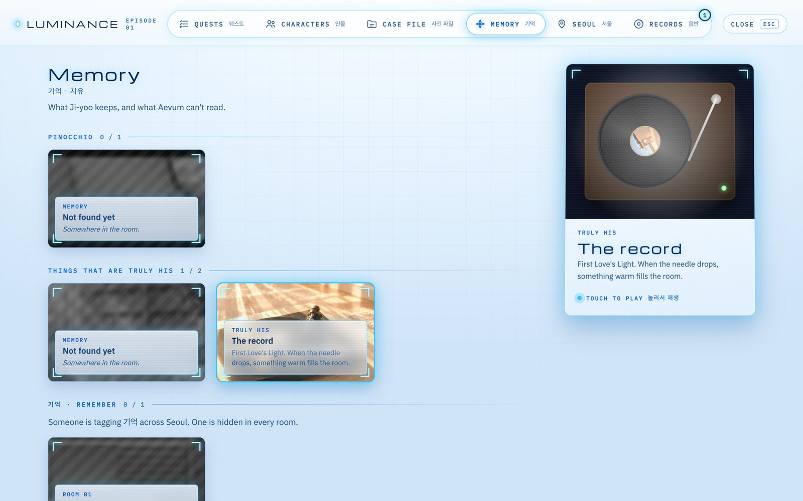
Memories you can hold.
Tap a memory and it comes up on the right to touch: the book, its back page, the record.
Every character has a file: a portrait that materializes, a dossier header with a file number and a barcode generated from their name, a scrolling ticker for their role, and tabs for their profile, outfits and props.
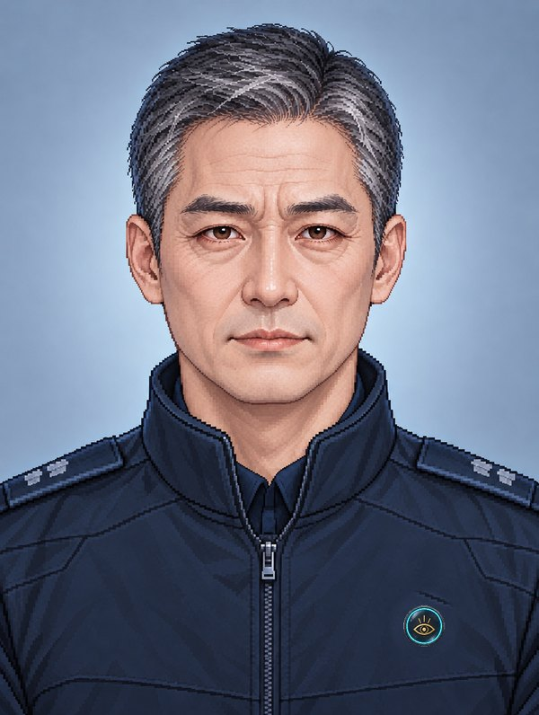
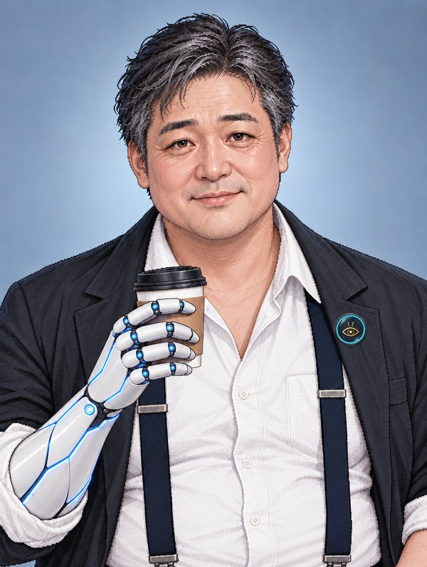
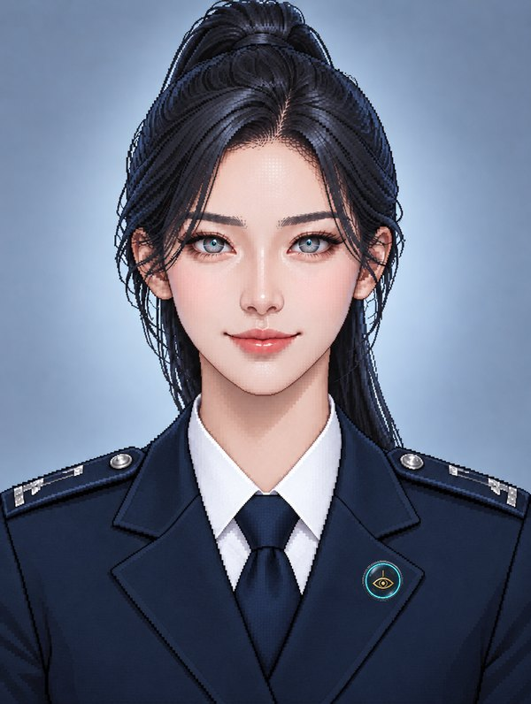
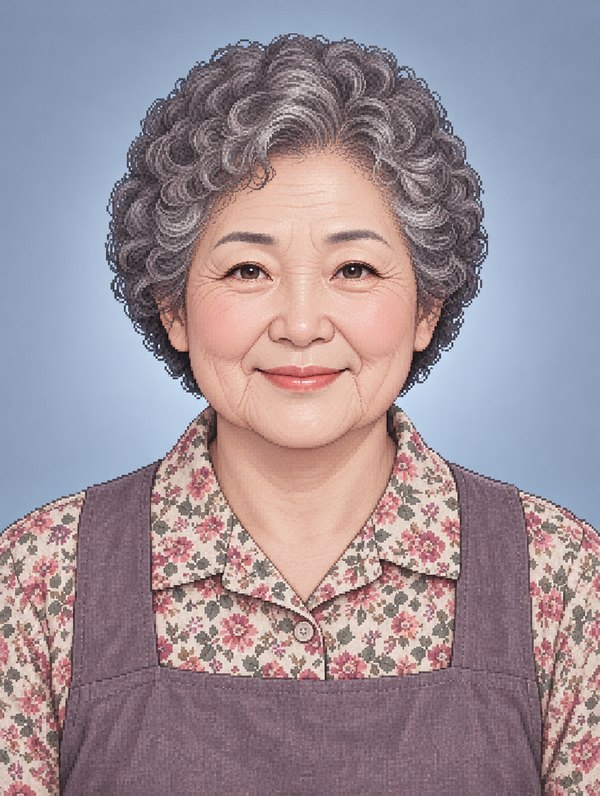
Each character has a set of expressions drawn from the same portrait, so the face you know carries through every mood.
Ji-yoo
He starts almost blank, the calm face Aevum trained into him. Every expression after that is one nobody gave him.
Hae, at work
Dry and guarded at the precinct. The laugh is rare, so it has to count.
Hae, at home
In her father’s apartment, the guard comes down.
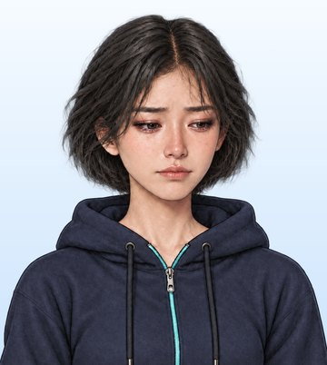
Everyone else
Supporting characters get just enough range for their scenes.
Dr. Lee Ha-Eun
Captain Park
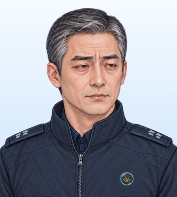
Detective Jang
Choi Yu-jin
I generated each walk as a short video, cut it into a 12-frame loop and laid the frames out in a strip, so the game can step through them in time with the character’s movement. Every frame was cleaned of green-screen fringe: despill, trim the matte edge, then neutralize what’s left of the soft edge so there’s no glow around their hair.
When they stop, they slip straight into a thinking loop instead of freezing. There are front and back walks for the rare moment someone walks toward or away from camera, and a door-opening animation that starts exactly where they stop, so they never pop sideways.
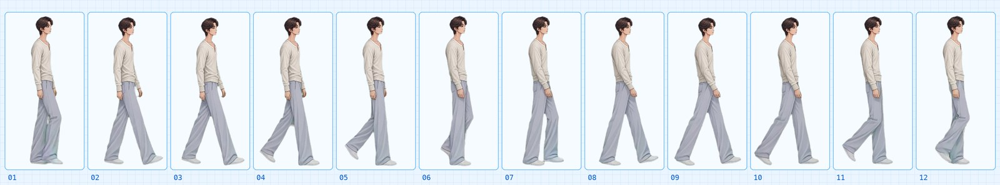
Ji-yoo’s walk, all 12 frames.
A little stage to walk on.
Inside each character file there’s a hologram floor. Hold the arrow keys, or click the floor, and they walk there. Let go and they start thinking. Press E and they walk up to the door and slide it open. Try it below.
All the music and sound effects come from ElevenLabs. The music is instrumental, five tracks so far, each written for one place in the game. Try them on the right, it’s the same soundtrack player that sits at the top of the storyboard.
Then I placed every effect by hand: slipper steps on each footfall that cut the instant he stops, a knock synced to the door’s two raps, a page flip timed to the cover swinging open. The music dips whenever the game pauses.
Most of my sound prompts start with the same word.
Soundtrack · 사운드트랙
ElevenLabs Music · instrumental
The glossy toggles, the orbiting light, the inverted faces, the music notes that started as drawn cream shapes and ended as tiny white bubbles. Almost everything on this page went through rounds like that.
Try it, look at it honestly, and try again. I keep a build log of every change and why, so the rounds are part of the story too.
A small stack, and a lot of rounds.
 Claude CodeMy engineering partner for the whole build
Claude CodeMy engineering partner for the whole build HiggsfieldRooms, characters, sprites and the opening film
HiggsfieldRooms, characters, sprites and the opening film Google DocsWhere the script lives
Google DocsWhere the script lives HTML, CSS, JSHand-built, no framework
HTML, CSS, JSHand-built, no frameworkComing in 2027.